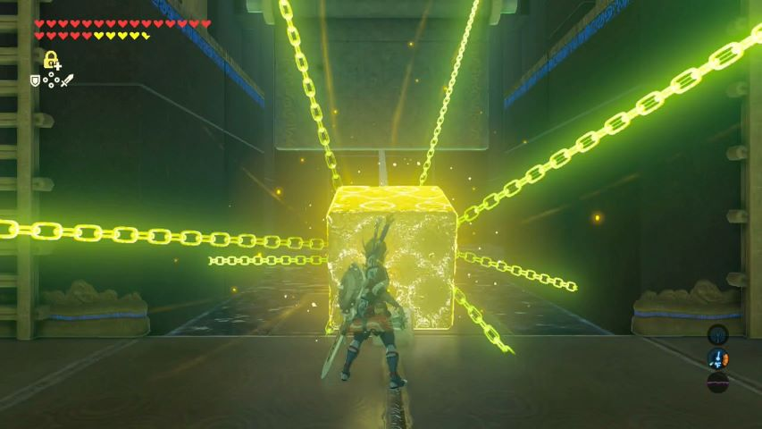
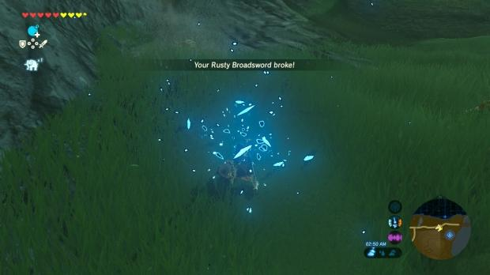

Why I love this game
Breath of the Wild has been my favorite game for a few years now. Playing BoTW is one of the best piece of media that I've experienced. The game has some of the best examples of well executed game design elements.
BoTW uses a variety of game design elements and mechanics that come together to make the full game. These design elements include but aren't limited to...
- Non-linear quest design
At the start of the game, you begin with your character on an area called the Great Plateu which serves as a tutorial.
After this reletivly brief start, the entire world is opened up to you, including the option to fight the final boss.
- Creative puzzle design
BoTW uses a variety of or elements in the puzzle areas and in the world environment itself that are able to be affected by the player with a few very versitile tools given to them.

- Mechanics that encourage exploration
To get players to explore the beautiful world created by the develpors, there are many mechanics that are put in place to incentivise this. A great exmple of this is the weapon breaking mechanic that has players always looking for better weapons around the environment.
